<header>
  <a routerLink=""><h1>Buscando el Rastro</h1></a>
  <div class="image-container">
    <a href="https://revistas.ucc.edu.co/index.php/ra/index">
    
    </a>
  </div>
  <div class="image-container">
    <a href="https://www.ucc.edu.co/">
      
    </a>
  </div>
  <div class="image-container">
    <a href="https://ediciones.ucc.edu.co/index.php/ucc">
    
    </a>
  </div>
  <!-- <p>Puntuación: {{0}}</p> -->
</header>
<div class="router-container">
  <router-outlet></router-outlet>
</div>
<footer>
  Developed by {{'@Amapola'}}
</footer>
<!-- {{this.comunicationService.getTransitionStatus()}} -->
<div class="cuat" [ngClass]="{'cuat-start': this.comunicationService.getTransitionStatus()==true}"></div>
<app-chiro-interlude></app-chiro-interlude>